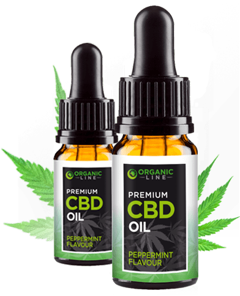
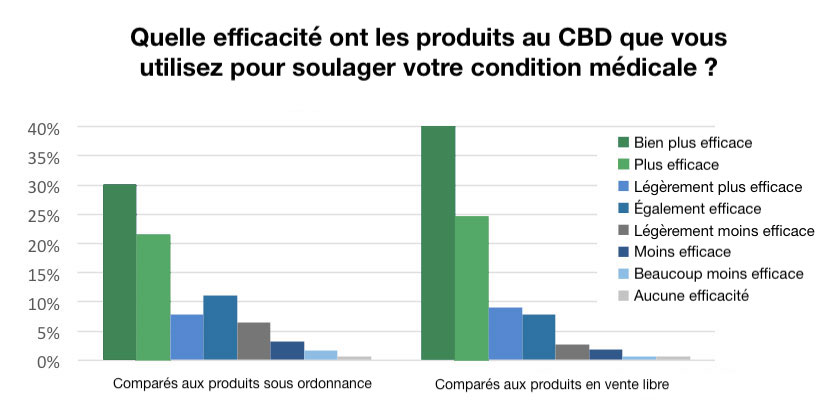

Les médecins les plus réputés recommandent maintenant cette nouvelle huile de CBD pour soulager efficacement les maux. Bienfait garanti à 100%
Cette huile de CBD nouvelle génération « Organic Line » soulage l'inconfort articulaire, les douleurs et les courbatures 5 fois mieux que de l'huile de chanvre ordinaire. Maintenant disponible en États-Unis sans ordonnance. Lisez la suite pour plus de détails et pour réclamer votre bouteille gratuite !
Par Laura Turner | Associated Health Press
Publié
(SEATTLE) - Voici une très bonne nouvelle pour des millions de personnes souffrant de divers maux au quotidien.
Un nouveau type d'extrait de chanvre est disponible dans tout le pays et peut être acheté sans ordonnance.
Et le mieux, c'est qu'il utilise un tout nouveau système d'absorbtion 450 % plus efficace que les huiles, bonbons, capsules et crèmes de chanvre ordinaires.
L'annabiol contient des doses concentrées pures de l'extrait de chanvre que l'on connaît sous les noms de CBD ou Cannabidiol, qui aide à soulager même les douleurs articulaires les plus coriaces ainsi que les douleurs musculaires générales, les courbatures, les troubles du sommeil, l'anxiété et de nombreux autres maux. Et comme il ne contient PAS de THC, il vous fait du bien sans sensation de "défonce".
Il calme, détend et soulage les tensions dans tout le corps.
UNE GOUTTE PAR JOUR POUR APAISER SES DOULEURS : Organic Line - une dose de CBD agissant jour et nuit pour vous garder en forme et en bonne santé.
Pourquoi cette nouvelle technologie est meilleure que le chanvre
La plupart des CBD du marché sont incapables de fournir ne serait-ce qu'une fraction de ces résultats. "Le problème, c'est que les produits à base de chanvre vendus sur Amazon ne contiennent pas de CBD, et que les entreprises qui vendent du vrai CBD le vendent généralement sous forme d'huile", selon la technologue en chef Mi Hwa Kim de chez Organic Line. "L'huile ne traverse pas la membrane cellulaire, alors que c'est là que se produit vraiment la guérison. Notre corps est composé à 80% d'eau, nos cellules à 90%. Et vous savez ce qu'on dit sur l'huile et l'eau... ils ne se mélangent pas."
C'est pourquoi Organic Line a été pensé avec une technologie unique le rendant soluble dans l'eau. Il a été démontré que cette technologie améliorait l'absorption du produit dans les cellules de 450%, permettant d'augmenter rapidement les niveaux de cannabinoïdes du corps.
"L'autre problème est que la plupart de ces formules ne contiennent qu'un seul composé du chanvre", explique Mme Kim. "Il a été démontré que les cannabinoïdes de la plante de chanvre fonctionnaient en synergie. En gros, ils travaillent mieux ensemble. C'est ce qu'on appelle 'l'effet d'entourage'. La plupart des gens ne profitent pas de tous les effets du CBD parce que le produit qu'ils utilisent ne contient en fait pas les meilleurs composés rajeunissants de la plante de chanvre. C'est pourquoi nous avons créé Organic Line, fabriqué avec notre technologie d'extraction basse température."
"Il faut aussi savoir que la plupart des produits au CBD sont fabriqués dans des fermes étrangères avec des pesticides, ou cultivés avec des semences et des procédés non biologiques. Nous cultivons le chanvre d'Organic Line dans une ferme française 100% biologique, dans le respect de normes agricoles strictes. Il est cultivé sans pesticide ni OGM. Sa culture est également spécialement organisée pour qu'il ne contienne AUCUN THC, et nous avons les résultats de tests pour le prouver.
Cassandra Leblanc, une grand-mère montréalaise de 52 ans a été l'une des premières utilisatrices d'Organic Line.
"J'étais en proie aux symptômes de la fibromyalgie et de l'arthrite. Je ne pouvais plus sortir de mon lit. J'avais constamment mal. Et les soi-disant 'remèdes' étaient pires que le mal. Ils m'ont fait prendre des traitements très agressifs. J'étais clouée au lit et sévèrement déprimée. Je n'avais plus de vie."
"Puis j'ai commencé à prendre les gouttes Organic Line. Quelques jours seulement après avoir commencé à en prendre, j'ai constaté une différence. Mes douleurs ont considérablement diminuées. J'avais de nouveau de l'énergie. Je les prends depuis 4 mois maintenant, et je peux vous dire que je ne prends plus aucun médicament à l'exception du CBD. Ça a complètement changé ma vie. Je n'exagère pas en disant que le CBD m'a redonné ma vie."
Comment ça marche
La clé des bienfaits pour la santé d'Organic Line est notre système endocannabinoïde, un réseau de récepteurs qui se trouve dans nos cellules. Ce système est là pour maintenir notre homéostasie (équilibre). En réponse à la présence de toxines dans notre corps, il libère des cannabinoïdes afin de rétablir l'état naturel des choses.
"C'est vraiment un système incroyable, comme un don du ciel, et il a été complètement négligé. Nos corps sont conçus pour fonctionner avec les composés du CBD, c'est pourquoi nous avons besoin d'une solution comme Organic Line, qui libère tout son potentiel."
Au fil du temps, avec le vieillissement, le système endocannabinoïde finit par s'épuiser. Moins de cannabinoïdes sont libérés, et leurs niveaux dans le corps s'épuisent. Il en résulte toutes sortes de symptômes du vieillissement comme une perte de mémoire liée à l'âge, une vision floue, un inconfort articulaire, des courbatures, de l'anxiété, de la dépression, des troubles du sommeil et d'autres maux.
Une goutte d'Organic Line suffit à stimuler votre système endocannabinoïde, et soulage les courbatures et les douleurs, améliore les cycles de sommeil, l'humeur, la mémoire, la concentration, etc. Et le mieux, c'est qu'il ne contient PAS de THC ou d'effet psychoactif quelconque. Vous obtenez donc un soulagement incroyable sans "défonce".
Une étude récente a même révélé que 60% des utilisateurs d'Organic Line déclaraient le CBD "plus efficace" que les médicaments sous ordonnance. 75% d'entre eux ont trouvé le CBD plus efficace que les produits en vente libre, comme vous pouvez le voir ci-dessous :
Toutes ces personnes disent que le CBD...
- Soulage la douleur en se liant aux récepteurs CB1 tout en réduisant le gonflement et l'inflammation
- Réduit l'anxiété sociale, les troubles cognitifs et l'inconfort chez les patients diagnostiqués avec un trouble d'anxiété sociale généralisée (TAS)
- Améliore la qualité du sommeil, de sorte que vous pouvez profiter d'une nuit de repos complète et vous réveiller rafraîchi avec plus d'énergie
- Stimule la mémoire, la concentration et l'acuité mentale
- Participe à combattre les troubles neurodégénératifs tels que la maladie d'Alzheimer, en éliminant la plaque qui bloque la signalisation neuronale
- Réduit la dépendance à la cigarette, à la drogue et à l'alcool en modulant les effets de récompense des composés créant une dépendance
- Participe à réguler la glycémie
- Offre un soulagement aux personnes souffrant de MII (maladie de Crohn ou colite) grâce à ses effets anti-inflammatoires
- Participe à améliorer les symptômes de la SEP (sclérose en plaques) en formant une protection durable des neurones
- Participe à faire brûler les graisses en réduisant l'appétit et les fringales
- Et réduit les spasmes musculaires et les crampes
Comme vous pouvez le voir, l'utilisation d'Organic Line présente de nombreux avantages...
Voici ce qu'en disent les adeptes...

"J'ai essayé plus de 50 produits au CBD et c'est de loin le MEILLEUR ! J'ai des douleurs articulaires intenses, des courbatures et du mal à faire une nuit de sommeil complète, et ça aide énormément ! C'est aussi le produit au CBD qui a le meilleur goût que j'aie jamais mangé. Organic Line ne se moque vraiment pas de ses clients."
- Jean M.
"Pendant des années, j'ai souffert mentalement et physiquement. J'ai essayé plein de traitements et je suis devenue accro à certains au fil des ans. Organic Line a changé tout ça. Ça a été comme un miracle pour moi. Maintenant, je n'ai plus besoin de prendre de pilules pour soulager mes douleurs. Je prends juste mon Organic Line et je me sens mieux que je ne l'ai jamais été depuis plusieurs années. Merci Organic Line."
- Jeanne E.
"J'ai acheté du Organic Line et ça a super bien marché. J'ai beaucoup d'arthrite... toutes les articulations de mon corps sauf mon coude gauche selon les radios. J'ai dû arrêter de prendre des AINS car j'ai récemment développé un problème rénal. Aujourd'hui, la journée a été exceptionnellement pénible. J'ai pris du tramadol et ça n'a rien fait. Ces gouttes d'Organic Line semblent être ce qui fonctionne le mieux pour moi. "
- Marine C.
"J’ai tout essayé. Je souffre d'arthrite sévère. Surtout à un genou. C'est tellement gonflé. Je vais avoir besoin de chirurgie mais je ne peux pas la faire pour l'instant. J'ai essayé des crèmes. J’ai tout essayé... L'Organic Line est arrivé hier et j'en ai pris une. Puis une deuxième en fin de journée et ça aide. J’étais surprise. Je vais peut-être pouvoir arrêter de marcher avec une canne tout le temps. Je vais continuer d'en prendre. Plusieurs personnes m'ont dit qu'un ou deux jours ne suffisaient pas... Je suis plus que ravie."
- Louise B.
"J'ai commencé à en prendre [Organic Line] il y maintenant un mois. Je prenais environ 600 comprimés toutes les deux semaines pour mes douleurs de genoux. Je n'ai pas pris une seule pilule depuis puisque j'ai arrêté de prendre mes médicaments contre l'arthrite. Oui, ce produit fonctionne. Merci."
- René Barreto
Arrêtez de vous sentir déprimé, mou, fatigué, et soulagez vos douleurs ! Changez de vie avec Organic Line !
Nous prenons tous les risques, et vous aucun
Un grand pourcentage d'hommes et de femmes utilisant Organic Line obtiennent des résultats vraiment étonnants. C'est pourquoi il est maintenant vendu avec une garantie allant bien au-delà des normes habituelles de l'industrie.
"Nous ne pouvons offrir cette garantie que parce que nous sommes sûrs à 100% que nos clients seront satisfaits. Nous voulons assurer à nos clients qu'ils ne prennent aucun risque. Donc, en plus d'offrir jusqu'à deux bouteilles gratuites pour les nouveaux clients, nous leur faisons également une énorme promesse qui leur garantit de ne pas risquer un seul centime", déclare James Cartwright, PDG d'Organic Line.
Voici comment ça fonctionne : prenez Organic Line exactement comme indiqué et vous serez ravi du résultat ! Dans le cas contraire, vous ne payez pas un centime.
Où trouver Organic Line
Organic Line sort officiellement en États-Unis et la société propose donc des BOUTEILLES GRATUITES aux nouveaux clients qui passent commande le
Un site Web sécurisé a été mis en place pour permettre aux lecteurs de passer commande. Cela donne à chacun une chance d'essayer Organic Line.
L'Organic Line peut être salutaire pour vous ou un être cher. Il peut vous montrer que les bienfaits du bien-être au quotidien (l'absence d'arthrite, d'articulation douloureuse et d'inflammation) peuvent être à nouveau vôtres, peu importe votre âge et peu importe depuis combien de temps vous souffrez.
Si vous n'êtes pas convaincu qu'il s'agit du produit qui mérite le plus de faire partie votre régime santé quotidien - un produit qui peut, à vous ou à un être cher, vous redonner une vie qui ne sera pas limitée par la douleur et l'anxiété - alors vous n'avez rien à payer. Et sans besoin de vous justifier !
Cette offre ne durera pas longtemps, alors assurez-vous de cliquer sur le lien ci-dessous pour RÉCLAMER VOTRE BOUTEILLE GRATUITE AUJOURD'HUI !
Important : en raison de la popularité croissante d'Organic Line et de sa récente exposition médiatique, cette offre va probablement vider les stocks et se terminer bientôt. Veuillez laisser vos coordonnées pour être prioritaire si vous manquez l'offre aujourd'hui.
CLIQUEZ ICI ET RÉCLAMEZ VOTRE BOUTEILLE GRATUITE PENDANT QU'IL Y A ENCORE DU STOCK !
En ce jour
Stock bas. Risque d'épuisement du stock : ÉLEVÉ
Pour votre santé,
Laura Turner
Associated Health Press
PS : Le miracle analgésique naturel que vous êtes sur le point de découvrir a été interdit pendant plus de 80 ans. Les sociétés pharmaceutiques cupides ont veillé à ce que vous ne puissiez pas mettre la main dessus. Ils ne voulaient pas que vous puissiez avoir accès à un remède naturel éprouvé qui soulage l'arthrite, l'anxiété, les douleurs articulaires, l'insomnie et l'inflammation en toute sécurité et sans besoin d'une ordonnance. C'est peut-être votre seule et unique chance de l'essayer avant que l'industrie pharmaceutique ne tente de le faire interdire à nouveau. Essayez l'Organic Line sans risque dès aujourd'hui...
"J'ai mal aux articulations depuis l'âge de 28 ans. ÇA ME TUAIT LITTÉRALEMENT ! Et les médicaments qu'ils m'ont prescris étaient encore pires que mes douleurs. Le CBD a stoppé mes douleurs, a guéri mon inflammation et tout cela sans aucun effet secondaire. En ce qui me concerne, c'est un miracle."
Tiphaine C.
"L'anxiété sociale m'a empêché de vivre ma vie. Je n'avais pas d'amis, je n'ai jamais eu de relation. Mais le CBD a changé tout cela. Je peux maintenant parler aux gens en personne. Ma thérapeute a commencé à le recommander à tous ses patients après avoir vu comment ça avait changé ma vie."
Christine Nouvoit
"Je suis un vieil homme, je pensais que ça y est, je ne pourrai plus jamais vraiment vivre ma vie normalement. J'avais abandonné. Jusqu'à ce que ma fille m'achète du Organic Line. Ma vie a complètement changé. J'avais moins de douleur, plus d'énergie et je pouvais jouer au golf, jouer avec mes petits enfants, ne plus dormir toute la journée... Je ne souffrais plus."
Claude Hamon
"Je prends des gouttes Organic Line depuis que c'est sorti. Et honnêtement, rien ne m'a jamais autant aidé. Mes genoux ne me font plus mal ! Il a fallu environ une semaine pour que ça fasse vraiment effet, mais je n'ai plus jamais regardé en arrière. C'est la meilleure chose que j'ai jamais faite pour moi-même."
Stéphane Lauday
"J'ai essayé plus de 50 produits au CBD et c'est de loin le MEILLEUR ! J'ai des douleurs articulaires intenses, des courbatures et du mal à faire une nuit de sommeil complète, et ça aide énormément ! C'est aussi le produit au CBD qui a le meilleur goût que j'aie jamais testé. Organic Line ne se moque vraiment pas de ses clients !!"
Jordan H.
COMPOSITION/INGRÉDIENTS
- COMPOSITION Extrait organic de CBD (15%). Huile organique de Chanvre (85%). Informations sur les allergènes : aucun. Sans THC. Tous nos produits sont livrés avec un certificat d'analyse.
- Health Wellness Whose head office is located Carlyle House 235-237 Vauxhall Bridge Road London – SW1V1EJ contact@annabiol.com Company number : 12575025
- https://www.latribune.fr/supplement/huile-cbd-que-faut-il-savoir-quels-sont-les-bienfaits-839328.html https://www.sciencesetavenir.fr/nature-environnement/huile-cdb-que-faut-il-savoir-sur-l-huile-de-cannabidiol_137838 https://www.mariefrance.fr/equilibre/bien-etre/saveurs-cbd-cbd-a-francaise-474031.html http://www.leparisien.fr/societe/cannabis-therapeutique-le-cbd-une-molecule-reputee-antidouleurs-10-05-2018-7708332.php https://www.hexagonevert.fr/utiliser-cbd-cannabidiol-soulager-larthrose-larthrite/ https://greenowl.fr/blog-cbd-medicinal/cbd-et-anxiete/ https://icm-institute.org/fr/actualite/effet-anti-inflammatoire-cannabidiol-compose-non-psychoactif-cannabis/ https://www.hexagonevert.fr/comment-le-cbd-reduit-la-pression-arterielle-et-ameliore-la-fonction-des-arteres/
Mentions légales
Références
CECI EST UNE PUBLICITÉ. IL NE S'AGIT PAS D'UN VÉRITABLE ARTICLE, D'UN BLOGUE OU D'UNE MODIFICATION DE LA PROTECTION DES CONSOMMATEURS.